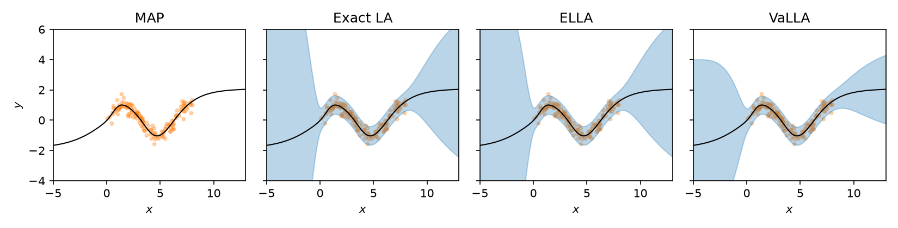

Example: ELLA and VaLLA
Exact linearized Laplace needs the full GGN of the network. That is fine for a small MLP, but it does not scale. ELLA and VaLLA both approximate the same linearized-Laplace GP in function space, so they work with larger networks but using subsampled data. ELLA builds a low-rank Nyström basis from parameter Jacobians. VaLLA fits a sparse variational GP with inducing points.
In this example we fit both to the sinusoidal regression task from the regression example and compare them with exact LA. Both methods leave the network weights alone. You train a MAP network as usual and fit the posterior afterwards.
import torch
from laplace import Laplace
from helper.dataloaders import get_sinusoid_example
torch.manual_seed(711)
X_train, y_train, train_loader, X_test = get_sinusoid_example(sigma_noise=0.3)
Training a MAP#
Nothing new here. We train a single-hidden-layer Tanh network, reseeding first so the initialization doesn't depend on the data sampling above:
torch.manual_seed(711)
model = torch.nn.Sequential(
torch.nn.Linear(1, 50), torch.nn.Tanh(), torch.nn.Linear(50, 1)
)
criterion = torch.nn.MSELoss()
optimizer = torch.optim.Adam(model.parameters(), lr=1e-2)
for i in range(1000):
for X, y in train_loader:
optimizer.zero_grad()
loss = criterion(model(X), y)
loss.backward()
optimizer.step()
Exact linearized Laplace#
As a reference, we fit a full-GGN Laplace approximation. The network has only 151 parameters, so this is cheap.
We generated the data with noise \(\sigma = 0.3\), so we pass that value as
sigma_noise and only tune the prior precision. This assumes the aleatoric
noise is known. If it isn't, optimize the noise together with the prior
precision through the marginal likelihood, as in the
regression example.
la = Laplace(
model,
"regression",
subset_of_weights="all",
hessian_structure="full",
sigma_noise=0.3,
)
la.fit(train_loader)
la.optimize_prior_precision(method="marglik")
ELLA#
ELLA (Deng, Zhou, and Zhu) is selected
with hessian_structure="gp" and functional_approximation="nystrom". During
fit, it draws subsample_size training inputs, computes the network's
parameter Jacobians on them, and keeps the top n_eigenvalues directions of
the resulting kernel as a Nyström basis. It then accumulates the GGN in that
basis over the full loader. Think of subsample_size as how much of the data
gets a say in the basis, and n_eigenvalues as how many directions you keep.
n_eigenvalues must be positive and at most subsample_size, which in turn
can't exceed the number of training rows.
We have 150 points, so 100 of them for the basis and a rank of 20 is plenty:
ella = Laplace(
model,
"regression",
subset_of_weights="all",
hessian_structure="gp",
functional_approximation="nystrom",
subsample_size=100,
n_eigenvalues=20,
sigma_noise=la.sigma_noise.item(),
prior_precision=la.prior_precision.item(),
)
ella.fit(train_loader)
If you ask for more directions than the sampled kernel actually has, fit
raises a ValueError that tells you the usable rank. That happens when the
subsample is too small or too redundant. Lower n_eigenvalues, raise
subsample_size, or try another seed.
The basis selection and the GGN accumulation each draw from the loader
separately. With a shuffling loader they may see different rows.
ella.n_data records how many examples went into the GGN.
We reuse the noise and prior precision from the exact LA, so ELLA's predictive is directly comparable to it. The prior has to be a positive scalar precision with zero mean. ELLA has no GP marginal likelihood, so to tune the prior precision on its own you need held-out data:
Passing validation data also makes ella.fit_history_ record the validation
negative log likelihood next to the processed example counts.
VaLLA#
VaLLA (Ortega, Rodríguez Santana, and
Hernández-Lobato) takes a different route to
the same GP. Instead of a fixed basis, it places num_inducing inducing points
in input space and fits a variational posterior over the function values there.
It is selected with functional_approximation="variational".
The inducing points need a starting position. inducing_locations="random"
picks them from the training inputs, and "kmeans" places them at k-means
centroids, which only works for floating-point tensor inputs. You can also pass
a tensor of locations yourself. Floating-point locations then move during
fitting. Integer tensors and mapping-style inputs stay where
you put them, and only the variational factor and hyperparameters are
optimized.
alpha picks the divergence that VaLLA minimizes. The default alpha=1.0 is
the alpha-divergence objective from the paper, and alpha=0.0 gives the usual
ELBO. Here we place 30 inducing points with k-means and fit the ELBO:
valla = Laplace(
model,
"regression",
subset_of_weights="all",
hessian_structure="gp",
functional_approximation="variational",
inducing_locations="kmeans",
num_inducing=30,
alpha=0.0,
sigma_noise=la.sigma_noise.item(),
prior_precision=la.prior_precision.item(),
)
valla.fit(train_loader, iterations=3000, lr=1e-3)
Unlike ELLA, fit runs an optimizer over minibatches for iterations steps
at learning rate lr, with the network weights held fixed. It updates the
variational factor and the inducing locations. The prior precision and
observation noise from the exact LA are only starting values here, and the
optimizer tunes them too, which is why VaLLA doesn't need a separate
optimize_prior_precision call.
The objective at each step is in valla.fit_history_["objective"]. If the
curve hasn't flattened, keep going from where you stopped (the figure below
doesn't do this):
Without override=False, a second fit starts the inducing points and
variational factor over, but keeps the learned prior precision and noise.
Predictive#
All three objects are called the same way. For regression they return the MAP mean and the latent variance. Add the observation noise to get the predictive variance of \(y\). For VaLLA, that is the noise it learned during fitting. The figure shows the mean with a band of two predictive standard deviations:
import matplotlib.pyplot as plt
x = X_test.flatten()
fig, axes = plt.subplots(1, 4, sharey=True, figsize=(11, 2.8))
def panel(ax, title, f_mu, f_var=None, sigma_noise=None):
ax.set_title(title)
ax.scatter(X_train.flatten(), y_train.flatten(), alpha=0.3, color="tab:orange", s=8)
f_mu = f_mu.detach().flatten()
ax.plot(x, f_mu, color="black", lw=1)
if f_var is not None:
std = (f_var.detach().flatten() + sigma_noise**2).sqrt()
ax.fill_between(x, f_mu - 2 * std, f_mu + 2 * std, alpha=0.3, color="tab:blue")
ax.set_xlim(x.min(), x.max())
ax.set_xlabel("$x$")
with torch.no_grad():
panel(axes[0], "MAP", model(X_test))
for ax, (name, posterior) in zip(
axes[1:], [("Exact LA", la), ("ELLA", ella), ("VaLLA", valla)]
):
panel(ax, name, *posterior(X_test), sigma_noise=posterior.sigma_noise.item())
axes[0].set_ylim([-4, 6])
axes[0].set_ylabel("$y$")
plt.tight_layout()

ELLA is very close to exact LA here. For a 1D problem and 151 parameters, a rank-20 basis is apparently enough. Inside the data region, all three bands stay close to the observation noise. Away from the data, VaLLA's bands are wider than exact LA on the left and narrower on the right. It learned its own prior precision and noise and works through 30 inducing points, so some difference from exact LA is expected.
ELLA fits in a single pass with no optimizer, but you have to choose
subsample_size and n_eigenvalues yourself. VaLLA is more expensive to fit
and adds an optimization loop, and it learns its hyperparameters as it goes.
Beyond regression#
Both methods also handle classification and reward modeling, and the call
pattern stays the same. For classification, posterior(x) returns class
probabilities. For reward modeling, it returns a (mean, covariance) tuple for
the rewards of individual inputs, shaped [batch, 1] and [batch, 1, 1], so
unpack it as you would in regression. VaLLA has
two classification-specific knobs. When you pass inducing locations yourself,
inducing_classes says which output each one belongs to (class 0 by default).
mc_softmax_samples switches the data term from the default probit
approximation to Monte Carlo sampling, and you need it for any alpha other
than 1.
If you need joint predictions across inputs, for instance for Bayesian
optimization, pass joint=True to predictive_moments,
functional_samples, or predictive_samples. The samples come back shaped
[samples, batch, outputs]. Neither method has weight-space sample, since
the posterior lives in function space.
To save a fitted posterior, use state_dict and load_state_dict. For ELLA
this stores the Nyström basis, and for VaLLA the inducing and variational
state. The checkpoint holds the posterior only, not the network. Load it into
a posterior built around the same pretrained model, with the same input keys,
curvature backend, backend options, and backpropagation setting.
load_state_dict checks that the model's weights and buffers match the
checkpoint. It also restores the seed, and for VaLLA the random-generator state
used in Monte Carlo fitting.
The full option list is in the ELLA and
VaLLA API reference.
python -m examples.ella and python -m examples.valla are minimal scripts
that fit each method and print the output shapes.